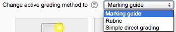
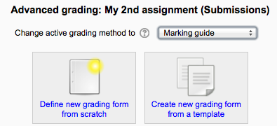
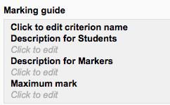
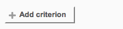
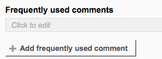
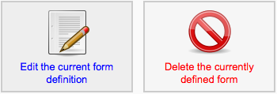
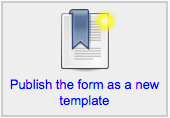

A marking guide is an advanced grading method where a teacher enters a comment per criterion and a mark up to a maximum.
Create an assignment, and in the Grades section, choose from the Grading method drop down menu the Marking guide option.

- When the assignment has been created and Marking guide selected as above, click Save and display and choose Define new grading form from scratch.

- Give the guide a name and description.
- Click on the criterion name to edit it. It will open up a box for typing into.
- Click the Click to edit links to provide an explanation for students and for markers as to what is required. It will open up a box for typing into.
- Click the Click to edit link to allocate a maximum mark for this criterion. It will open up a box for typing into.
Click the button to add one or more criteria (and then repeat the process as above)

- If a teacher regularly uses the same comments when marking, it is possible to add these to a frequently used comments bank.
- Click the Click to edit link and add a comment.
- Click the +Add frequently used comment button to add another one and repeat as needed.
By checking the appropriate boxes it is possible to allow students to see (or not)the guide definition and how many marks are allocated per criterion.
Once completed, the guide may be saved as a draft or saved and made ready to use, according to the button selected at the bottom of the screen.

- Once completed, a guide may be edited or deleted by going to Administration > Assignment administration > Advanced grading > Marking guide. Options appear to edit or delete the currently defined form.
- When an assignment has been graded, a warning appears if the guide is edited to check whether the assignments need to be regraded or not.
Those users with the capability Capabilities/moodle/grade:sharegradingforms (and perhaps Capabilities/moodle/grade:managesharedforms) may save their forms as a template for others to use. They will see an additional option in *Administration > Assignment administration > Advanced grading.

(Note that teachers do not have these capabilities by default.)
- If templates have been made available, then on first accessing the Marking guide, teachers may select to “Create a new grading form from a template”. This will open up a search box to locate the desired template:
Note that when duplicating or restoring a Marking guide, frequently used comments will be duplicated only from Moodle 2.6.2 onwards. Prior to this version they were not copied over.
When the assignment to be graded is accessed in the usual way, the form appears with the criteria and an empty comments and score box. If frequently used comments have been added, the teacherclicks into the box and then clicks on the required comment to insert it.
When students click on an assignment which has a marking guide attached to it, they will see the marking guide as part of the information about their assignment. Thus, they can see the marking guide before they submit.